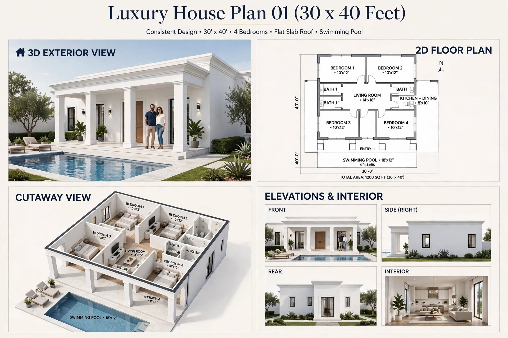
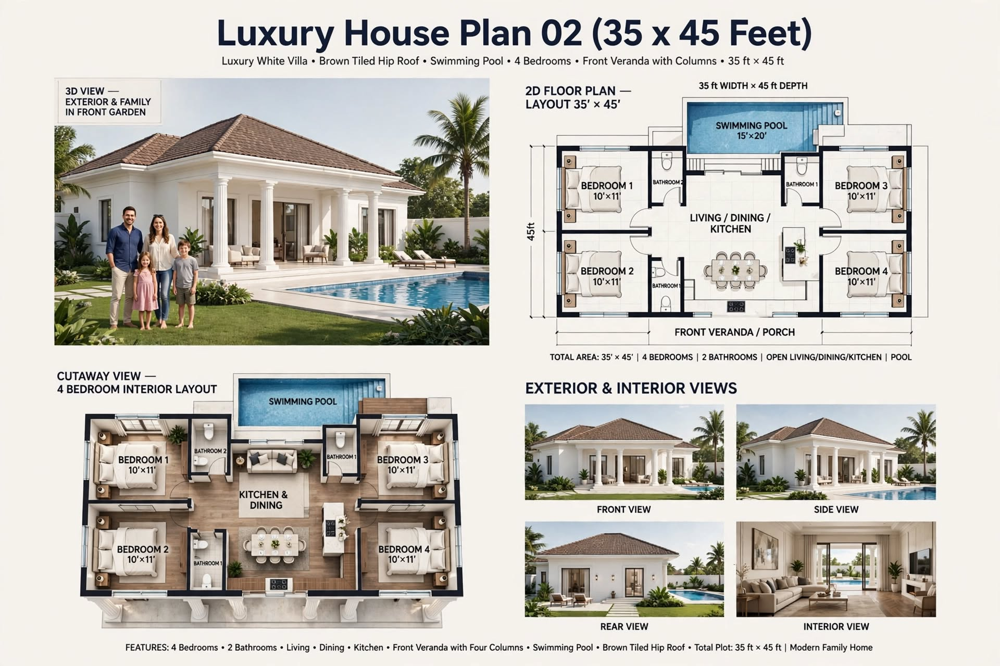
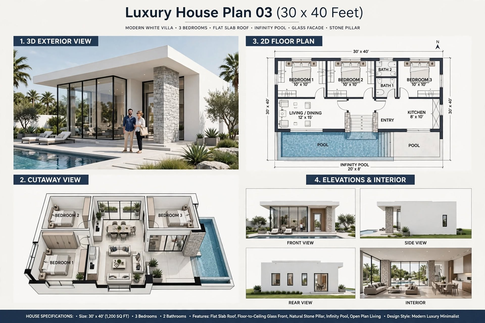
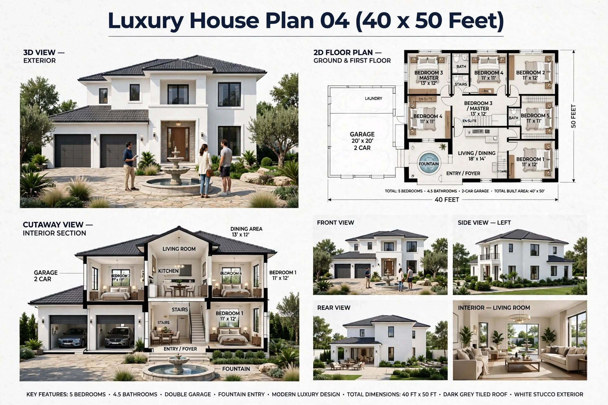
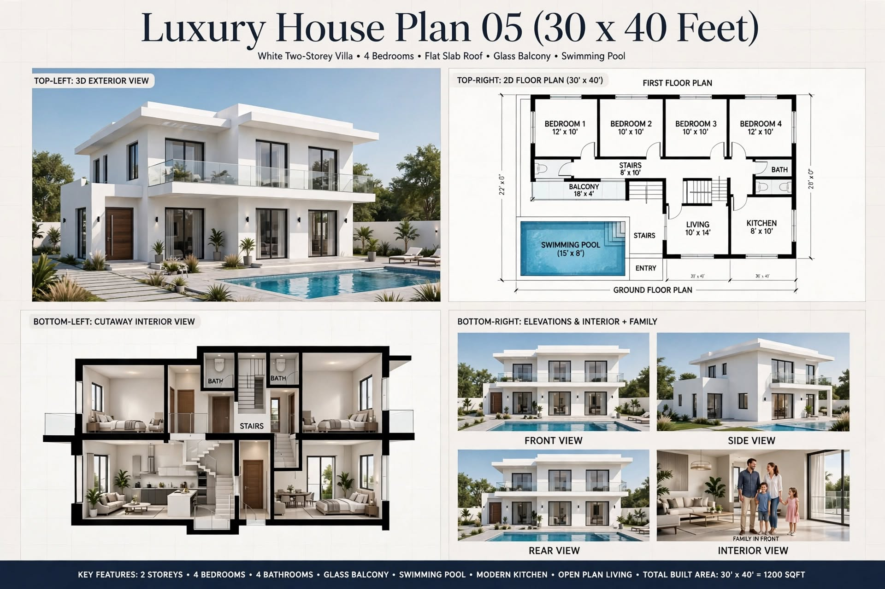
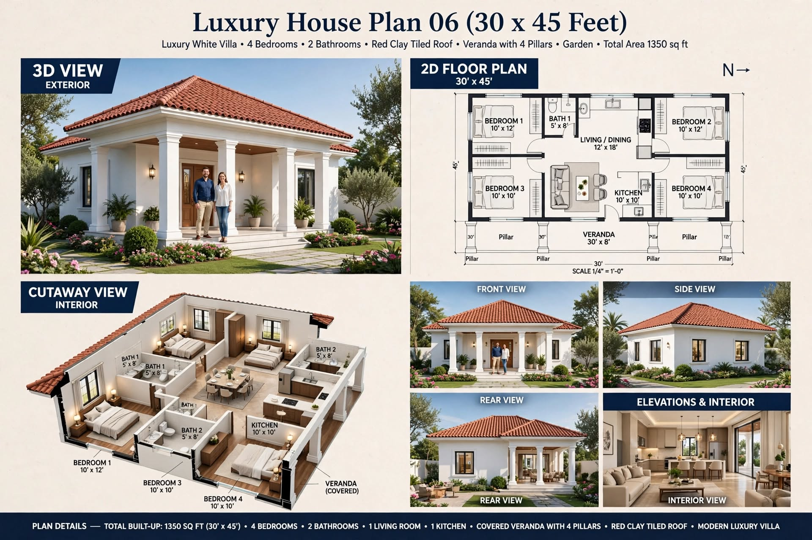
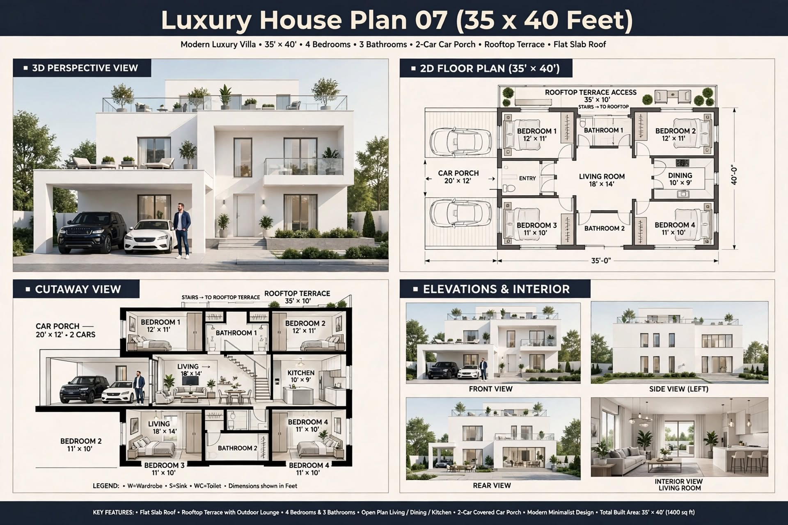
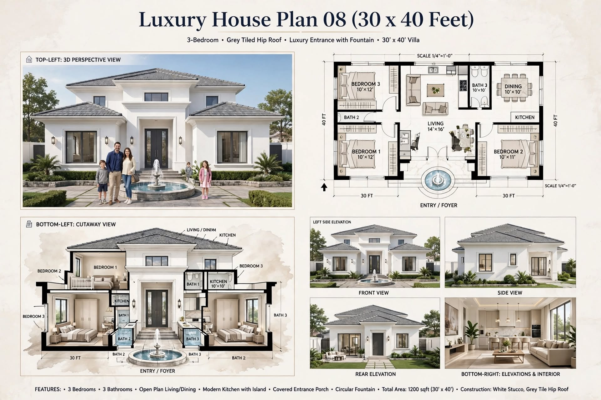
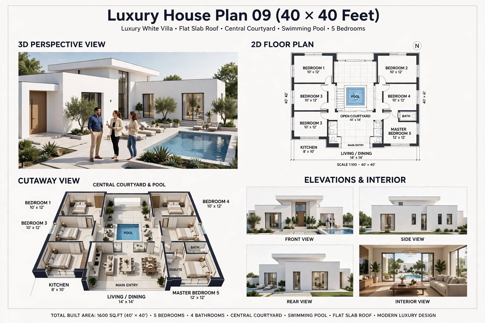
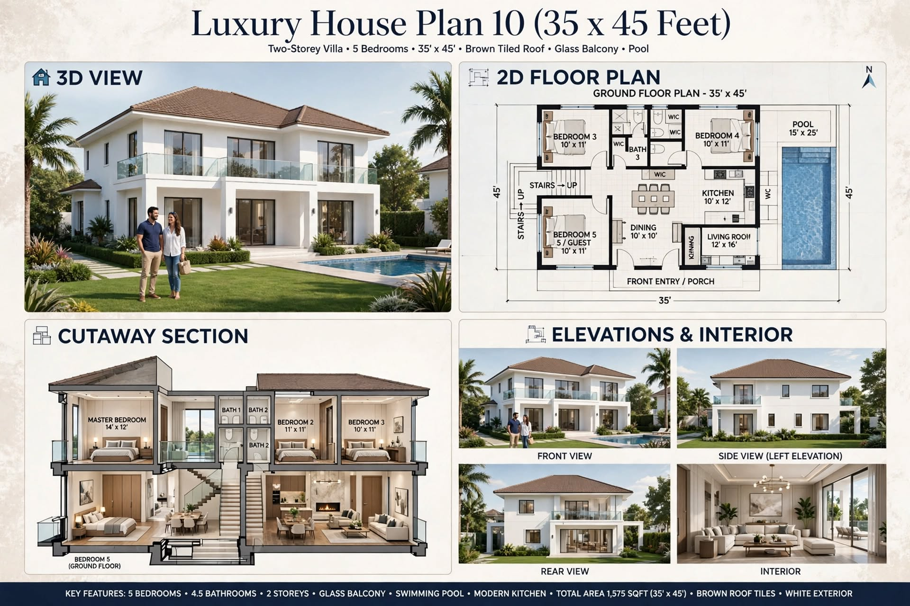

LUXURY HOUSE PLAN 01
Luxury House Plan 01 — Design Review
A visual house-plan concept for reviewing room arrangement and exterior design.
READ THE COMPLETE GUIDE →Explore ten luxury home design concepts with exterior perspectives, 2D floor-plan images, furnished cutaway views and practical planning notes. Each guide explains what to review before adapting an inspiration design to a real site.

LUXURY HOUSE PLAN 01
A visual house-plan concept for reviewing room arrangement and exterior design.
READ THE COMPLETE GUIDE →
LUXURY HOUSE PLAN 02
A visual design reference for discussing interior layout and outdoor connections.
READ THE COMPLETE GUIDE →
LUXURY HOUSE PLAN 03
A visual concept to review circulation, daylight and exterior appearance.
READ THE COMPLETE GUIDE →
LUXURY HOUSE PLAN 04
A house-plan image to assess layout relationships and site-specific requirements.
READ THE COMPLETE GUIDE →
LUXURY HOUSE PLAN 05
A visual starting point for discussing indoor and outdoor spaces.
READ THE COMPLETE GUIDE →
LUXURY HOUSE PLAN 06
A design reference for considering room layout and exterior character.
READ THE COMPLETE GUIDE →
LUXURY HOUSE PLAN 07
A visual concept to review upper-level access and outdoor space requirements.
READ THE COMPLETE GUIDE →
LUXURY HOUSE PLAN 08
A house-plan image for discussing bedroom privacy and shared living spaces.
READ THE COMPLETE GUIDE →
LUXURY HOUSE PLAN 09
A visual reference for considering courtyard, circulation and drainage.
READ THE COMPLETE GUIDE →
LUXURY HOUSE PLAN 10
A design concept for discussing exterior style and the relationship between indoor and outdoor areas.
READ THE COMPLETE GUIDE →